- Portfolio 2026
- UX designer
- Usabilità, design system, accessibilità
- Lecce, Italia · anche da remoto
Progetto prodotti digitali che tutti sanno usare.
Sono Simone Mercuri. Rendo semplici servizi e prodotti complessi, dalla pubblica amministrazione alla moda, con l’usabilità come metro di ogni scelta e un carattere visivo che si fa ricordare.
- Linee guida AgID
- WCAG 2.2 AA
- EN 301 549
- Legge 4/2004
Questa pagina è costruita come i prodotti che progetto. Provala solo con la tastiera: TabInvioSpazio
Lavori
- Accessibilità nei servizi digitali pubblici Approfondimento Tre pattern ricorrenti nelle piattaforme della PA, ricostruiti da zero e funzionanti: elenchi di pratiche, azioni sui documenti, richieste in più passaggi.
- Tavola Caso studio Un editor di menu per ristoranti piccoli, costruito sul design system Salento e pensato per aggiornare piatti, prezzi e disponibilità in meno di un minuto.
- AMF Caso studio Restyling di un e-commerce di moda: l’indossato in loop al posto dello still life, con un movimento che si può sempre fermare.
Accessibilità nei servizi digitali pubblici
Progetto secondo le Linee guida AgID sull’accessibilità degli strumenti informatici e il modello di Designers Italia.
In Italia i servizi digitali pubblici devono rispettare la Legge 4/2004 e le Linee guida AgID, che rimandano alla norma EN 301 549 e quindi alle WCAG. È il minimo richiesto, non l'obiettivo.
Dietro ogni modulo c'è chi lo compila dal telefono in pausa pranzo, chi usa un lettore di schermo, chi ha poca familiarità con il linguaggio amministrativo e poco tempo. Progetto per queste persone, poi verifico i criteri.
I progetti per la PA su cui lavoro sono riservati. I componenti qui sotto sono ricostruiti da zero, con dati di fantasia, e funzionano davvero.
Quattro sfide ricorrenti
Linguaggio amministrativo
Termini tecnici e sigle che l'ufficio conosce e chi fa la richiesta no.
Tabelle dense
Centinaia di pratiche da filtrare e ordinare, spesso lette con un lettore di schermo.
Stati poco chiari
Pallini colorati come unica informazione: invisibili per chi non distingue i colori.
Moduli lunghi
Errori scoperti solo alla fine, lontani dal campo, e dati persi tornando indietro.
Elenco pratiche
Filtri per stato, ordinamento su ogni colonna e un conteggio dei risultati che il lettore di schermo annuncia. Lo stato ha sempre un'icona di forma diversa, non solo un colore.
{{ resultText }}
| {{ r.id }} | {{ r.nome }} | {{ r.tipo }} | {{ r.dataLabel }} | {{ r.statoLabel }} |
Nessuna pratica con questo stato.
- 1.3.1 Info e correlazioni
- 1.4.1 Uso del colore
- 2.1.1 Tastiera
- 4.1.3 Messaggi di stato
Azioni su un documento
Validare è immediato e si può annullare. Rifiutare e chiedere un'integrazione richiedono una motivazione, perché dall'altra parte qualcuno la leggerà. Ogni azione ha lo stesso nome dal pulsante al messaggio di conferma.
Attestazione ISEE 2026
Pratica PR-2026-0142 · Laura Bianchi
Caricato il 18 settembre 2026
Stato:{{ docLabel }}
{{ panelHint }}
{{ docErr }}
- 3.3.1 Identificazione di errori
- 3.3.2 Etichette o istruzioni
- 3.3.4 Prevenzione degli errori
- 4.1.3 Messaggi di stato
Richiesta in tre passaggi
Un indicatore dice dove sei. Gli errori compaiono vicino al campo e riepilogati in cima, con un link che porta al punto giusto. Prima di inviare, un riepilogo modificabile. Prova a continuare senza compilare.
{{ errSumTitle }}
Dati personali
{{ eNome }}
16 caratteri, lo trovi sulla tessera sanitaria.
{{ eCf }}
Ti scriviamo solo quando la pratica cambia stato.
{{ eEmail }}
Dettagli della richiesta
Almeno 20 caratteri. Scrivi come parleresti allo sportello.
{{ eDescr }}
Riepilogo
Controlla i dati prima di inviare. Puoi ancora modificarli.
Dati personali
- Nome e cognome
- {{ vNome }}
- Codice fiscale
- {{ vCfUp }}
- {{ vEmail }}
Dettagli
- Tipo
- {{ vTipo }}
- Descrizione
- {{ vDescr }}
Richiesta inviata
Numero pratica PR-2026-0143. Ti scriveremo a {{ vEmail }} quando cambia stato.
- 2.4.6 Intestazioni ed etichette
- 3.3.1 Identificazione di errori
- 3.3.3 Suggerimenti per gli errori
- 3.3.4 Prevenzione degli errori
Tavola
Un editor di menu per ristoranti piccoli, dove il menu cambia ogni giorno e lo aggiorna chi sta in sala, spesso dal telefono.
Problema
Gli strumenti esistenti sono pensati per le catene: decine di campi, flussi lunghi, interfacce da desktop. Così il menu online resta indietro rispetto a quello vero, e i clienti chiedono piatti finiti.
Obiettivo
Aggiornare piatti, prezzi e disponibilità in meno di un minuto, con una mano sola, senza formazione.
Processo
- Passo 1OsservazioneConfronto con il ristorante per cui è nato il progetto: chi aggiorna il menu, quando e da quale dispositivo.
- Passo 2Flusso minimoTre azioni coprono quasi tutto: segnare un piatto finito, cambiare un prezzo, aggiungere il piatto del giorno.
- Passo 3Design system SalentoToken di colore e tipografia, componenti documentati, un'identità calda ma leggibile.
- Passo 4Prototipo in codiceUn editor funzionante da provare in sala, non una sequenza di schermate.
Soluzione
Lo studio a sinistra, il menu dell’ospite a destra: una sola fonte di verità. Cambia un prezzo, spegni un vino finito o aggiungi una nuova bevanda e l’anteprima si aggiorna; scegli una tappa per vedere come il menu viene vestito. L'interruttore Disponibile è l'azione più frequente, quindi è la più grande. Provalo.
Ricostruito dal repository di Tavola: la testata e lo studio seguono il design system del prodotto (ink, slate, DM Serif Display e Archivo), l’anteprima segue il tenant (crema e brick). L’Osteria della Vigna è il locale dimostrativo.
Stato attuale
In sviluppo. Editor e design system Salento completati; la pagina pubblica del menu è in lavorazione.
Prossimi passi
- Test di usabilità in sala, durante il servizio
- Menu in inglese per i turisti
- Documentazione pubblica del design system
AMF: dallo still life all’indossato in loop
Per lo shop di un brand di pellicce fake fur ho proposto di aprire ogni prodotto con un video muto di pochi secondi: il capo addosso, in movimento, front e back in un solo asset.
Problema
Il capo appeso non racconta come cade, come si apre, quanto è lungo addosso. In una pelliccia sono proprio queste le informazioni che decidono l’acquisto.
Direzione
L’indossato diventa la prima lettura, lo still life scende a dettaglio. Tutto dentro l’universo AMF: bianco, nero, tipografia stretta, nessun ornamento.
Tre decisioni
- Il capo è addossoFront e back sullo stesso fondo bianco, con una luce coerente su tutto lo shop.
- Il loop al posto della posaPochi secondi: il modello entra di fronte, fa mezzo giro e chiude di spalle. Primo e ultimo frame combaciano, il loop non ha stacco.
- Un’aggiunta, non un vincoloDove il video non c’è, la card resta sull’indossato fermo e al passaggio mostra lo still life. La griglia non si rompe.
La griglia dello shop
Tre dei loop già girati, scelti perché hanno la stessa inquadratura e la stessa distanza dal modello. Il movimento si può fermare in ogni momento e parte fermo se il sistema chiede di ridurre le animazioni.
-
{{ p.name }}{{ p.price }}Fake fur · {{ p.variants }}
{{ amfNote }}
- 2.2.2 Pausa, stop, nascondi
- 2.3.3 Animazione da interazioni
- 2.1.1 Tastiera
Su mobile
Una colonna, card a tutta larghezza. Il loop parte solo quando la card è al centro dello schermo e si ferma quando esce: un video alla volta, meno batteria e meno dati. Scorri dentro il telefono.
{{ amfMobNote }}
Regole di comportamento
- In griglia il frame è fermo al caricamento, il movimento parte da solo solo dove c’è il loop.
- Nella scheda prodotto il loop apre la galleria: indossato, poi look completo, poi still life.
Stato attuale
Proposta consegnata al cliente ad agosto 2026. I primi loop sono già stati girati; le altre collezioni seguiranno con la stessa luce e la stessa inquadratura.
Se non si usa con facilità, non è finito.
Metto l’usabilità al centro di ogni progetto. Un prodotto funziona quando chiunque lo capisce al primo sguardo e lo usa senza fatica, qualunque siano i suoi strumenti, il suo tempo, le sue capacità.
Questo non significa rinunciare alla creatività. Significa costruirla sopra fondamenta solide: prima la chiarezza, poi il carattere. Quando una soluzione visiva è anche la più comprensibile, il prodotto non si limita a funzionare. Si fa ricordare.
Usabile
- chiaro
- prevedibile
- accessibile
- riconoscibile
- espressivo
- curato
Accattivante
Non scelgo tra chiarezza e carattere: li tengo insieme.insieme, non in alternativa
Usabile, prima di tutto
Ogni scelta parte da una domanda: la persona riesce a fare ciò che le serve, al primo tentativo? Lo verifico con prototipi e, quando il progetto lo permette, con test su utenti reali, non con le opinioni.
Alla portata di tutti
Progetto per chi usa la tastiera, un lettore di schermo, un telefono datato o ha poco tempo. L’accessibilità è un requisito fin dall’inizio, non un controllo alla fine.
Semplice e intuitivo
Tolgo finché resta l’essenziale: meno passaggi, parole di tutti i giorni, comportamenti prevedibili. Se un’interfaccia va spiegata, va riprogettata.
Creativo, senza compromessi
Un’interfaccia chiara può anche emozionare. I loop di AMF si muovono, ma si fermano con un tocco; lo stile di Tavola è caldo, ma resta leggibile.
Il metodo, in quattro tempi
- CapireInterviste, osservazione, analisi dei dati: prima le persone, poi le schermate.
- SemplificareFlussi, architettura dell’informazione, linguaggio. Il percorso più breve verso l’obiettivo.
- Dare formaInterfaccia e design system: token, componenti e regole documentate.
- VerificareTest di usabilità, WCAG, tastiera e lettori di schermo. Poi si ripete.
Strumenti
- Figma
- Miro
- HTML e CSS
- Git
Metodi
- Design Thinking
- Lean UX
- Agile UX
- Prototipi e test di usabilità
Accessibilità
- WCAG 2.2 AA
- EN 301 549
- NVDA e VoiceOver
- Linee guida AgID
Hai un prodotto complesso da rendere semplice?
Cerco un ruolo da UX designer dove usabilità e qualità visiva contano allo stesso modo. Rispondo entro due giorni lavorativi.

- simonemercuri.me@gmail.com
- Lecce, Italia · disponibile anche da remoto